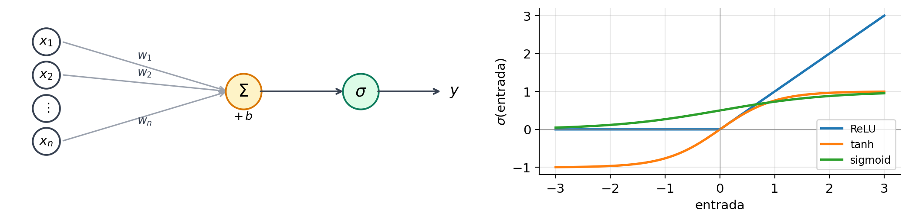
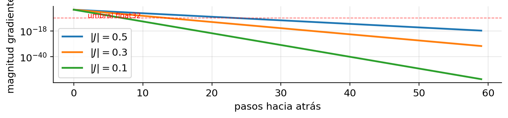
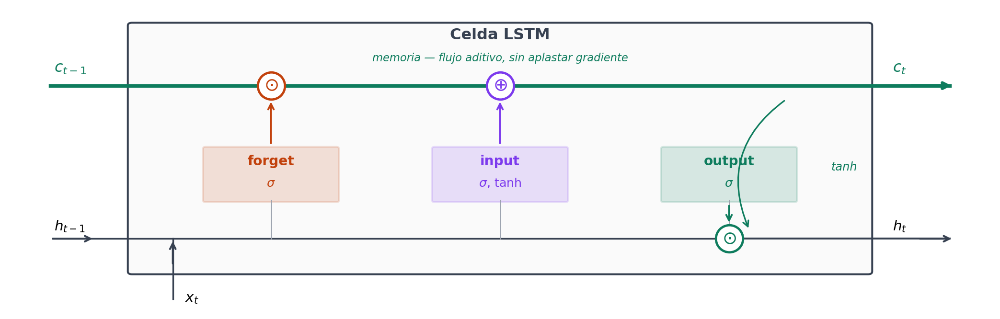
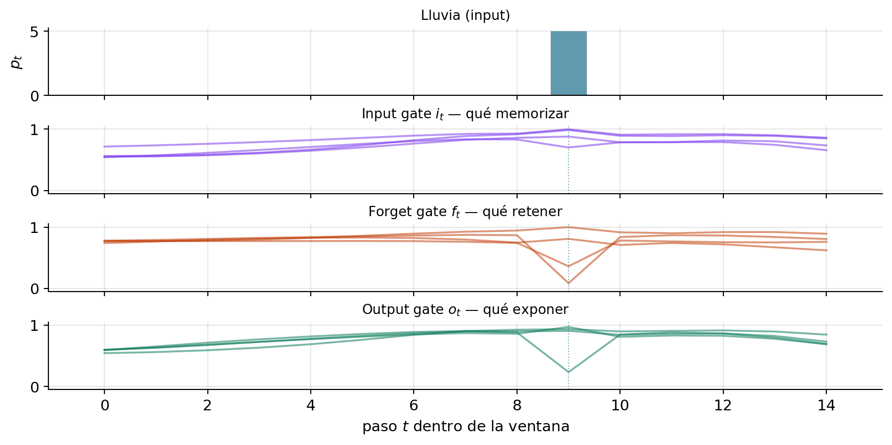
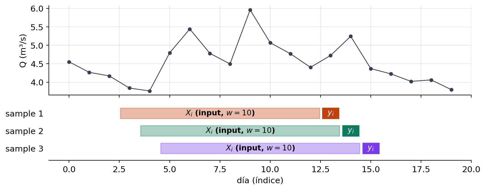

Curso de Series Temporales con Python
mayo 2026
En series temporales Deep Learning (DL) lleva años conviviendo con métodos clásicos. En general:
Una neurona = regresión lineal con una función no lineal al final:
\[ y = \sigma(w_1 x_1 + w_2 x_2 + \ldots + w_n x_n + b) = \sigma(\mathbf{w}^\top \mathbf{x} + b) \]

Dense(64) = 64 neuronas en paralelo que comparten la entrada \(\mathbf{x}\):
\[ \mathbf{h} = \sigma(W \mathbf{x} + \mathbf{b}), \qquad W \in \mathbb{R}^{64 \times n} \]
Apilar varias capas Dense = una red profunda. Cada capa transforma la representación de la anterior.
Entrenar = ajustar \(W, \mathbf{b}\) para que \(\hat y \approx y\) observado:
Se itera sobre mini-batches durante muchas epochs hasta que la pérdida deja de bajar.
Un perceptrón multicapa sobre la misma matriz \(X\) (lags + rolling + exógenas) que se usa en ML.
Pros: rápido, igual API que LSTM. Contras: no aprovecha el orden — cada muestra es un vector "plano". Suele perder vs XGBoost.
Útil como: baseline DL antes de complicarse.
Mantiene un estado oculto \(h_t\) que se actualiza con cada nueva observación:
\[ h_t = \tanh(W_x x_t + W_h h_{t-1} + b) \]
\(x_1\)
RNN
\(h_1\)
→
\(x_2\)
RNN
\(h_2\)
→
\(x_3\)
RNN
\(h_3\)
→
\(\hat y\)
(RNN desenrollada en 3 pasos; el estado \(h_t\) se pasa al siguiente paso)
Para entrenar, el gradiente debe retropropagarse desde \(\hat y\) hasta \(x_1\) a través de la cadena:
\[ \frac{\partial \mathcal{L}}{\partial h_1} = \frac{\partial \mathcal{L}}{\partial h_T} \cdot \underbrace{\frac{\partial h_T}{\partial h_{T-1}} \cdot \frac{\partial h_{T-1}}{\partial h_{T-2}} \cdots \frac{\partial h_2}{\partial h_1}}_{T-1 \text{ factores}} \]
Cada factor incluye una derivada de \(\tanh\) que está en \([0, 1]\) y suele rondar 0.3–0.5.
Tras 30 pasos: gradiente \(\sim 0.4^{30} \approx 10^{-12}\) → la RNN básica no aprende dependencias a más de ~20 pasos.
Si los pesos \(W_h\) son grandes, el producto explota en vez de desvanecerse — de ahí el truco habitual del gradient clipping.

Hochreiter & Schmidhuber (1997). Tres puertas controlan qué información fluye:

\[ \begin{aligned} f_t &= \sigma(W_f [h_{t-1}, x_t] + b_f) \\ i_t &= \sigma(W_i [h_{t-1}, x_t] + b_i) \\ \tilde{c}_t &= \tanh(W_c [h_{t-1}, x_t] + b_c) \\ c_t &= f_t \odot c_{t-1} + i_t \odot \tilde{c}_t \\ o_t &= \sigma(W_o [h_{t-1}, x_t] + b_o) \\ h_t &= o_t \odot \tanh(c_t) \end{aligned} \]
Memoria larga: \(c_t\) pasa información sin pasar por funciones que aplasten gradientes.
Dataset de juguete: la lluvia provoca una respuesta en el caudal 5 pasos más tarde. Entrenamos una LSTM pequeña (4 unidades) y miramos las gates en acción.

Las puertas son tres regresiones logísticas que aprenden cuándo abrir/cerrar las válvulas del estado interno.
Cho et al. (2014). Une input + forget en una sola update gate; combina \(c\) y \(h\) en uno. 2 gates en vez de 3.
| RNN | LSTM | GRU | |
|---|---|---|---|
| Parámetros (por unit) | 1× | 4× | 3× |
| Memoria larga | mala | excelente | muy buena |
| Velocidad | rápida | lenta | media |
| Cuándo | pruebas rápidas | datasets grandes / dependencias largas | empate con LSTM en muchos casos |
Heurística: empieza con GRU. Si el modelo todavía no captura dependencias del año pasado, sube a LSTM con más unidades.
Vaswani et al. (2017) cambió NLP. En series temporales llegaron después:
neuralforecast (Nixtla) los expone con API uniforme.Sesión 3 — ML clásico: la matriz \(X\) era plana, un vector por muestra.
\[ X \in \mathbb{R}^{N \times p} \qquad \text{(samples, features)} \]
El orden temporal se codificaba en los nombres de columnas (lag_1, lag_7, rolling_7, …) — ya no era una dimensión.
LSTM: la matriz se convierte en un tensor 3D.
\[ X \in \mathbb{R}^{N \times T \times F} \qquad \text{(samples, timesteps, features)} \]
Cada muestra es ahora una matriz \(T \times F\): \(T\) pasos temporales, \(F\) series alineadas en cada paso.
ML aplana el tiempo en columnas; LSTM lo conserva como una dimensión propia.
Una ventana de longitud \(w\) recorre la serie. Cada posición produce una muestra \((X_i, y_i)\).

Serie de longitud \(L\), ventana \(w\), horizonte 1 → \(N = L - w\) muestras (cada una desplaza la anterior un paso).
Univariate — sólo caudal, ventana 30 días:
Multivariate — caudal + lluvia + temperatura:
| sample \(i\) | \(Q\) | \(P\) | \(T\) |
|---|---|---|---|
| \(t{-}30\) | 12.4 | 0.0 | 9.1 |
| \(\ldots\) | \(\ldots\) | \(\ldots\) | \(\ldots\) |
| \(t{-}1\) | 18.2 | 4.0 | 11.7 |
Pitfall: la ventana no introduce lag entre features. Si quieres que
p_{t-1}(nop_t) predigay_t, aplicashift(1)alDataFrameANTES de pasar acrear_ventanas.
Implementación de la ventana deslizante (caso univariate):
def crear_ventanas(serie, ventana=30, horizonte=1):
valores = serie.values
X, y = [], []
for i in range(len(valores) - ventana - horizonte + 1):
X.append(valores[i:i+ventana])
y.append(valores[i+ventana+horizonte-1])
return np.array(X)[..., None], np.array(y) # (N, ventana, 1)
X, y = crear_ventanas(CAUDAL.dropna()['1995':'2010'], ventana=30)
print(f'X shape: {X.shape} y shape: {y.shape}')X shape: (0, 1) y shape: (0,)En Keras: keras.utils.timeseries_dataset_from_array(...) hace lo mismo con menos código.
Las redes necesitan inputs estandarizados (media 0, std 1). Pitfall: ajusta el escalador SÓLO en el train.
Para series con cola larga (caudal con eventos): RobustScaler o log antes de escalar.
Recuerda invertir al final: tus métricas (NSE, KGE) van en la escala original.
from keras.models import Sequential
from keras.layers import LSTM, Dense, Dropout, Input
from keras.callbacks import EarlyStopping, ReduceLROnPlateau
model = Sequential([
Input(shape=(30, n_features)),
LSTM(64, return_sequences=False),
Dropout(0.2),
Dense(1),
])
model.compile(optimizer="adam", loss="mse")
callbacks = [
EarlyStopping(patience=10, restore_best_weights=True),
ReduceLROnPlateau(patience=5, factor=0.5),
]
model.fit(X_train, y_train, validation_split=0.1,
epochs=100, batch_size=64, callbacks=callbacks)Pitfall: validation_split desordena por defecto. Para series usar validation_data=(X_val, y_val) con val temporal.
| Técnica | Función | Cuándo usar |
|---|---|---|
Dropout(p) |
apaga \(p\) % de neuronas | siempre, en datasets pequeños |
recurrent_dropout |
dropout en gates | si el train sigue sobreajustando |
kernel_regularizer=l2(λ) |
weight decay | redes profundas |
EarlyStopping |
detiene en plateau | siempre |
BatchNormalization |
normaliza activaciones | redes muy profundas (raro en LSTM) |
Regla: empieza con Dropout(0.2) + EarlyStopping(patience=10). Si todavía hay sobreajuste, sube el dropout antes de quitar capacidad.
Las redes neuronales son estocásticas: misma arquitectura, distinta inicialización → distintas predicciones.
Reporta siempre la media (±std) sobre varias semillas. Una sola seed es ruido.
Hasta ahora hemos predicho un solo paso (\(y_{t+1}\)). Para predecir \((y_{t+1}, \ldots, y_{t+h})\) hay tres estrategias clásicas:
| Direct | MIMO | Seq2Seq | |
|---|---|---|---|
| Modelos | \(h\) independientes | 1 | 1 |
| Capa final | \(h\) × Dense(1) |
Dense(h) |
decoder + TimeDistributed(Dense(1)) |
| Coupling entre outputs | ninguno | sólo vía \(h_T\) | vía estado del decoder |
| Coste de entrenamiento | \(h\)× | 1× | 1× |
Recursive (multi-step iterando el modelo de 1 paso) no se usa con RNN — el error compuesto a 7+ días destruye la calidad. Reservado para clásicos (ARIMA, XGBoost vía skforecast).
Default en hidrología: MIMO. Salta a seq2seq sólo si MIMO produce trayectorias demasiado “planas”.
¿Y si sólo quieres \(y_{t+7}\) y \(y_{t+30}\) (sin los días intermedios)? La respuesta sigue siendo MIMO, con Dense(2) y un Y de shape (N, 2):
HORIZONTES = [7, 30]
def crear_ventanas_horizontes(df, features, target, ventana, horizontes):
offsets = np.asarray(horizontes) - 1
max_h = max(horizontes)
X, Y, idx = [], [], []
for i in range(len(df) - ventana - max_h + 1):
X.append(df[features].values[i : i + ventana])
Y.append(df[target].values[i + ventana + offsets])
idx.append(df.index[i + ventana])
return np.asarray(X), np.asarray(Y), pd.DatetimeIndex(idx)
model = Sequential([
Input(shape=(VENTANA, F)),
LSTM(32), Dropout(0.2),
Dense(len(HORIZONTES)), # Dense(2)
])¿Por qué no Direct (2 modelos independientes)? El encoder \(h_T\) codifica el estado de la cuenca — informativo para ambos horizontes. Direct entrenaría dos LSTMs separadas que tirarían esa representación compartida.
ForecasterRnn para KerasDesde v0.12, skforecast envuelve modelos Keras con la misma API que en sesión 3:
from skforecast.deep_learning import ForecasterRnn, create_and_compile_model
from skforecast.model_selection import backtesting_forecaster_multiseries
model = create_and_compile_model(
series=df, lags=30, steps=7, levels=["caudal"],
recurrent_layer="LSTM", recurrent_units=64,
)
forecaster = ForecasterRnn(regressor=model, levels="caudal", lags=30, steps=7)
forecaster.fit(series=df_train)
metric, preds = backtesting_forecaster_multiseries(
forecaster=forecaster, series=df, steps=7,
initial_train_size=..., refit=False,
)Aporta: backtesting walk-forward, escalado automático, soporte multi-serie. Estrategia interna: siempre MIMO (one-shot) — no existe ForecasterRnnRecursive.
neuralhydrology (Kratzert et al., JKU Linz):
Práctica (2h):
00_lstm_intuicion_lluvia.ipynb (15-20 min) — warm-up: LSTM diminuta sobre dataset de juguete, gates visualizadas a mano.01_lstm_caudal_keras.ipynb (1h) — preparar ventanas, LSTM, callbacks, predicción sobre caudal real.02_comparacion_y_neuralhydrology.ipynb (30 min) — comparativa final + demo NeuralHydrology.03_interpretabilidad_y_errores.ipynb (15 min) — SHAP recap + análisis por régimen.Proyecto final (1h 30min): notebooks/sesion4/proyecto_final/ — pipeline completo sobre caudal o piezometría.
Hasta aquí el curso. Dudas finales y debate.
Curso de Series Temporales con Python